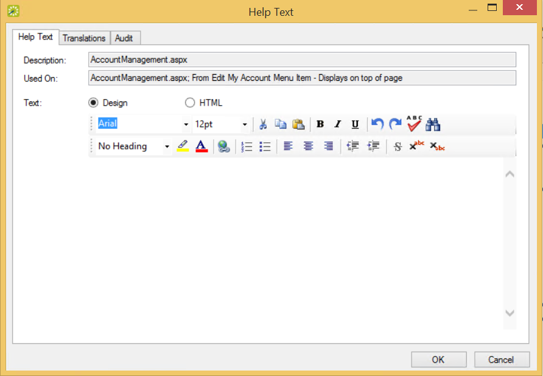

Configure Help Text
Since the EMS Desktop Client is the "backbone" for all editions of EMS, such as EMS Web App and EMS Kiosk, it enables you to customize the text that appears to users of those applications in your organization. This help text displays on various pages in EMS Web App, EMS Kiosk, EMS for Outlook, EMS Campus Planning Interface, and the EMS Floorplan Utility. As the EMS administrator, you can configure this help text in EMS, or if you are assigned to an appropriate everyday user security template (which has administrator access), you can configure it directly in EMS Web App.
Tip: Depending on your organization, configuration in the EMS Desktop Client may need to be performed by a different type of System Administrator than configuration and text customization in the EMS Web App.
Configuring Help Text in EMS Desktop Client
Follow the instructions below to enable custom help text for EMS Web App and/or EMS Kiosk.
- On the EMS menu bar, click Configuration > Everyday User Applications > Help Text. The Help Text window opens. This window lists the name or description for all types of Help Text that is currently in use in your EMS Web App and EMS Kiosk installations and the EMS Web App or EMS Kiosk page on which it appears. To filter for only a specific type of help text, select a type on the Type dropdown list.

Tip: You can view all help text including the text not in use: select Obsolete. Obsolete Help Text is displayed in red and italics in the Help Text window.
- Select the Help Text that you are configuring, and then click Edit. The Help Text dialog box opens. The Help Text tab is the active tab. The tab contains options for entering and configuring the help text.

- Configure the needed help text.
- Design is selected by default. Use the standard Windows plain text formatting options to format the message (spacing, number of lines, capitalization, and so on) so that it is displayed the way that you want in the help text.
- Select HTML and enter the necessary HTML code to format the message (spacing, number of lines, capitalization, and so on) so that it is displayed the way that you want in the help text.
- If translations have been defined for everyday user templates (see Configuring Language Translations), then open the Translations tab, and for each translation, click in the Text field, and enter the appropriate translation for the Help Text item.
- Click OK. The Help Text dialog box closes. You return to the Help Text window with the newly configured Help Text item automatically selected in the window.
Configuring Help Text in EMS Web App
Once Help Text customization is enabled in the EMS Desktop Client, System Administrators in the EMS Web App can follow the instructions below to customize the applications help text. First, you enable the feature, then you navigate to each page in EMS Web App that you wish to customize and enter help text.
Enable the Custom Help Text Feature
- Log in to EMS Web App.
- In the dropdown menu next to your name, click Admin Functions.

- The EMS Web App Administrator Function page opens.

- Click Enable Help Text Edit. A confirmation message appears indicating that Help Text Mode is now enabled.

Navigate to Pages in EMS Web App and Customize Help Text
- Navigate to the EMS Web App page where you wish to customize Help text. The Edit option is available in the upper right corner of the page.
- Click the option. An edit window launches where you can customize the help text (click Edit to enter your custom help text).

- If your help text should appear in another language, select a language option in the dropdown.

Tip: Options in the Language dropdown are controlled by another Administrator setting, Language Translations.
- After entering and configuring the Help text, click Save Changes to apply the text to the selected page.